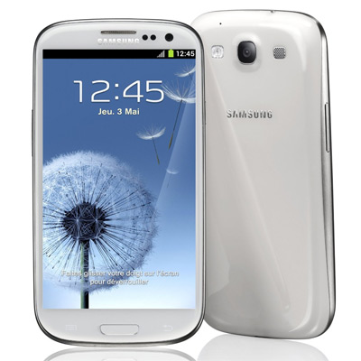

| iphone vs Samsung GALAXY S3 |
| L'iPhone (soprannome diffuso prevalentemente in ambito giornalistico: "melafonino")[6] è una famiglia di smartphone dell'Apple Inc. attualmente disponibile in commercio con i modelli iPhone 4, iPhone 4S e iPhone 5. In particolare l'iPhone rientra nella fascia alta del mercato degli smartphone e, come tutti gli smartphone più avanzati, offre funzioni multimediali di alto livello.
Il primo modello, distribuito nel 2007, era un
|
| Samsung GALAXY S3 |
| Samsung GT-i9300, è uno smartphone candy bar prodotto da Samsung annunciato il 3 maggio 2012 al Samsung Mobile Unpacked 2012[1] e messo in vendita a partire dal 29 maggio dello stesso anno. Disponibile in due varianti di colori: blu e bianco. È il terzo dispositivo top di gamma della serie Galaxy, successore del Galaxy S II.
 |